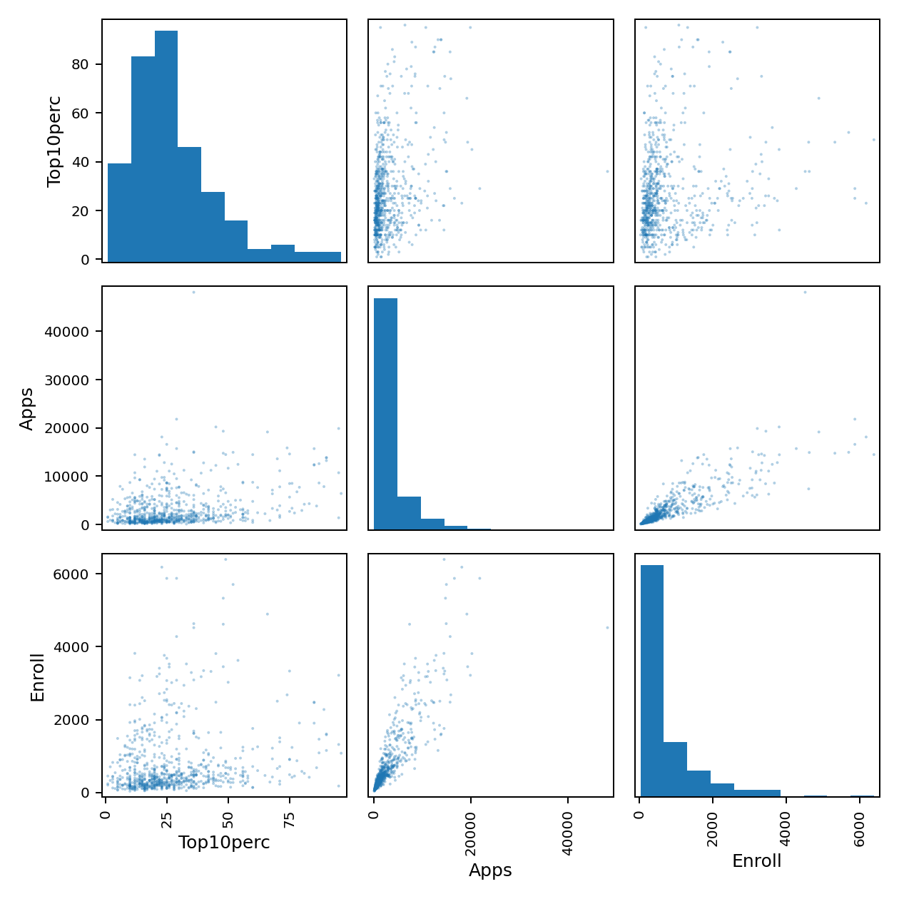

代码 2.4-26 · 第8(d)：三个变量的散点矩阵
按Notebook顺序运行。后续代码依赖前面定义的变量。真实数据来自教材官网。
逐步读代码
- 先按列名选三个变量；
pd.plotting.scatter_matrix生成三行三列的绘图区数组，非对角线画两变量散点，对角线因diagonal="hist"画直方图。 alpha=0.35控制透明度，s=10控制点面积；axes[0,0].figure从左上角绘图区取得所属的整张图。- 对整图调整布局后，循环替换文件后缀保存PDF与PNG，再显示并关闭。散点矩阵里的每格共享同一批学校记录。

下载已执行Notebook · 返回项目目录